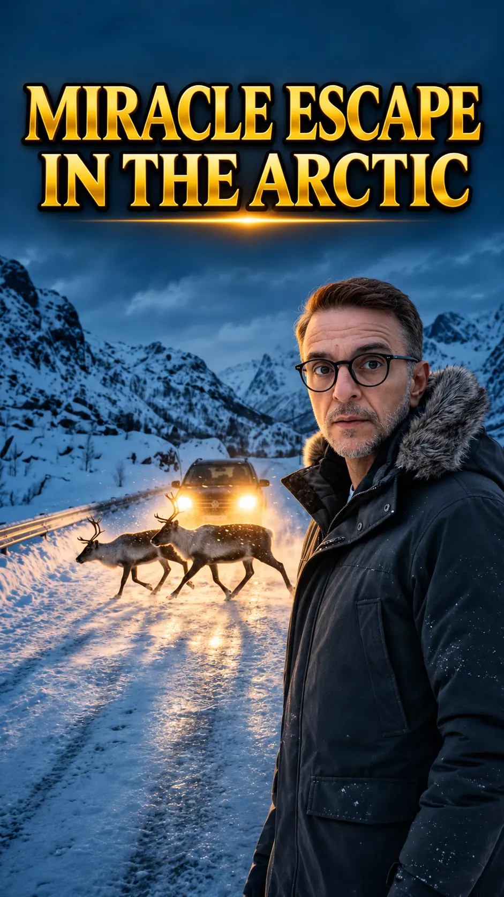

Miracle Escape in the Arctic: Sudden Encounter with Reindeer in Norway

Cover illustration is AI-assisted, not an original photograph of the incident.
Full approved article
Miracle Escape in the Arctic: Sudden Encounter with Reindeer in Norway
By: KARIM SAAB (Abdulkarim bin Ibrahim Al-Saab)
Deep in the Arctic winter of northern Norway, where temperatures plunge to -10°C and heavy snow blankets narrow mountain highways, every mile behind the wheel becomes a true test of alertness and composure. Along these remote northern stretches—where a driver can travel for hours through a silent, frozen wilderness—nature is never merely a backdrop; it is a living force capable of surprising the traveler at any second.
During my journey through these sub-zero conditions, as I drove cautiously along an icy road walled in by high snowbanks, two wild Arctic reindeer suddenly appeared out of nowhere right in the middle of my lane. Stopping abruptly on sheer ice was perilous—especially with a heavy semi-truck trailing behind me—so I immediately activated my hazard lights to warn the truck driver and prevent a rear-end collision.
The two reindeer kept trotting straight down the frozen road ahead of my car, refusing to step aside, until tension peaked as an oncoming vehicle sped around the bend with bright headlights. Its driver slammed on the brakes across the slick snow; by God’s grace, the car held its line without skidding into us. At the sharp sound of braking, the two reindeer instinctively leaped over the snowbank into the deep snow at the very last second—turning a heart-stopping Arctic close call into an unforgettable story of survival.
Arctic Wildlife Insight:
Northern Norway—including Tromsø and Finnmark—is home to tens of thousands of semi-domesticated reindeer herded for centuries by the indigenous Sámi people. Reindeer hooves undergo a remarkable seasonal adaptation: in winter, their footpads shrink and tighten, exposing the sharp rim of the hoof for traction on ice. However, blinded by headlights or reluctant to wade through deep roadside snowdrifts, reindeer often run straight along cleared highways, making sudden road encounters a classic hazard of Arctic winter travel.
Personal Reflection by KARIM SAAB:
“In travel, just as in life, critical moments arrive without warning. Staying calm, acting decisively, and placing your trust in God are what truly carry you safely through the toughest situations. Grateful for a safe escape during a moment that captured both the raw unpredictability of Arctic roads and the breathtaking beauty of Norway.”